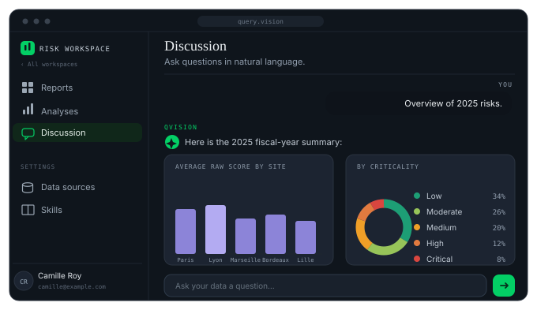
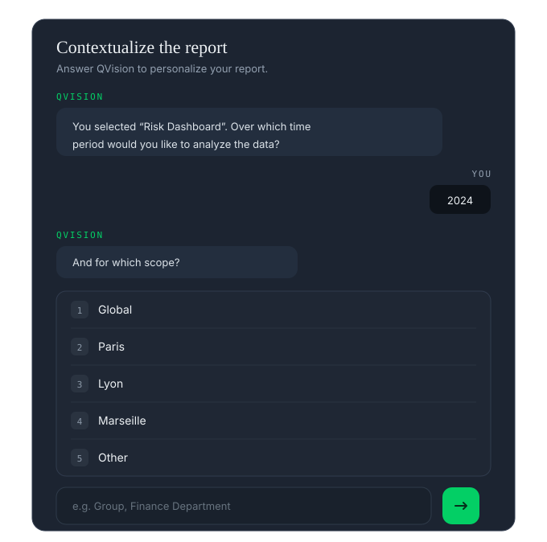
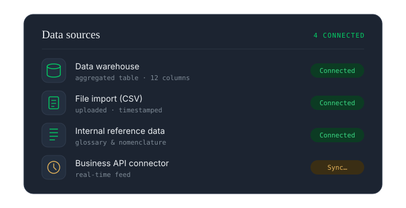

Agent 01 — QueryVision — The analyst
Query Vision turns complex data into simple decisions. Query your figures in plain language and instantly get a quantified, sourced and auditable report. No spreadsheet, no ticket, no waiting.
What the agent can do
Plain-language querying
Ask the question the way you would say it out loud. The agent translates, executes, and justifies every calculation step — the generated query is exposed, never hidden.

Analysis & visualization
A written insight, the right visualization, the key figure front and center. You understand by reading, not by interpreting — and every report can be contextualized, versioned and exported.

Business semantics
Indicators, dimensions, hierarchies: Query Vision speaks your department's language, not that of technical tables — thanks to the professional corpus loaded when your data is integrated.

How it works
Your sources, where they live. No copies outside your infrastructure.
Business modeling and governance rules, set at integration.
In plain language, by every authorized team.
The analysis, not the spreadsheet. Immediately readable, sourced.
Share, export, automate the decision — API and MCP.
Permissions by role, workspace and product — an audit log for every query — execution entirely inside your dedicated infrastructure, hosted in France.
Next step
A demonstration on a sample of your data, using your business vocabulary. No commitment.